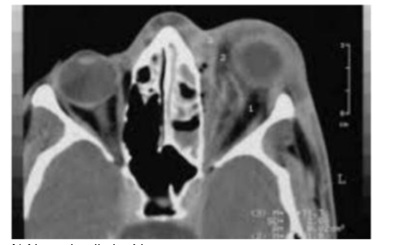

Escolar, sete anos, sem patologias prévias, deu entrada no pronto-atendimento com história de febre, dor ocular e inchaço em olho direito há três dias. Ao exame, presença de proptose ocular, dor a movimentação ocular, hiperemia conjuntival, edema e eritema palpebral à direita. Restante do exame sem alterações. Dentre as medidas a serem tomadas, o plantonista deverá
Sobre as conjuntivites alérgicas na faixa etária pediátrica assinale a alternativa incorreta:
Quais são os principais agentes bacterianos causadores de conjuntivite?
Assinale a alternativa correta sobre a conjuntivite neonatal:
No atendimento de caso endêmico-epidêmico de conjuntivite clinicamente diagnosticada, o procedimento médico inicial mais adequado na Estratégia de Saúde da Família (ESF) é:
No atendimento de caso epidêmico de conjuntivite Adenoviral, quais os procedimentos médicos mais adequados?
Menina, 3 anos de idade, apresenta artrite em joelho direito há 5 meses e em tornozelo esquerdo há 3 meses. Os exames laboratoriais mostram alteração das provas de atividade inflamatória (velocidade de hemossedimentação, proteína C reativa) e fator antinúcleo positivo. Qual o comprometimento oftalmológico esperado?
Nas uveítes herpéticas sem comprometimento corneano, é correto afirmar que:
Homem, 70 anos, sitiante, apresenta história de ulcera de córnea de repetição no OD. Atualmente queixa-se de olho vermelho, lacrimejamento, sensação de corpo estranho e baixa acuidade visual no mesmo olho. Refere estar em uso de aciclovir oral há 15 dias sem melhora. Ao exame apresenta defeito epitelial central corando com uoresceína, bordas elevadas, sem infiltrado estromal, medindo 2 x 3mm. Qual o provável diagnóstico e conduta?
Recém-nascido de três dias de idade, nascido de parto domiciliar, deu entrada na emergência pediátrica com edema palpebral, conjuntivas avermelhadas, secreção ocular abundante. Selecione abaixo a opção terapêutica recomendada.
O tracoma é uma afecção inflamatória crônica ocular que leva a cicatrizes na conjuntiva palpebral. Em casos mais graves, há lesões corneanas importantes que podem resultar em cegueira. O agente etiológico do tracoma é:
Uma adolescente de 12 anos apresenta um nódulo na pálpebra inferior pela segunda vez no mês. Respondeu adequadamente ao tratamento com antibiótico oral no episódio anterior, e agora o nódulo não tem eritema ou enduração. Não há febre, alteração visual ou alteração conjuntival. A conduta mais adequada é:
Assinale a alternativa incorreta com relação à celulite pós-septal ou orbitária.
Você atende um lactente de 6 meses, com queixa de “secreção ocular”. O pai descreve uma secreção amarelada que fez com que o olho da criança amanhecesse grudado nos últimos 3 dias. Ao exame, o bebê sorri, e você percebe secreção hialina unilateral e um pouco de secreção amarelada. A conjuntiva está branca. A criança xa o olhar e segue sua mão 180°. Qual é o diagnóstico mais provável?
Criança, 3 anos de idade, evoluindo há dois dias com quadro de edema e hiperemia em pálpebra direita após picada de pernilongo. Nega anorexia. Nega alergia a medicações ou antecedentes patológicos prévios. Ao exame: bom estado geral, eupneica, ativa, corada, hidratada, presença de crosta com secreção purulenta em pálpebra superior direita, edema, hiperemia e aumento de calor em pálpebra superior direita, sem oclusão orbitária, com movimentação ocular normal. Qual seria a melhor opção terapêutica?
Recém-nascido de seis dias de vida é trazido ao pronto-socorro com quadro de edema palpebral, secreção mucopurulenta, quemose e pseudomembrana conjuntival no olho direito com início há um dia. Qual a causa mais provável dessa conjuntivite?
Homem, 29 anos de idade, motorista, com história de lombalgia há cinco anos, refere di culdade para realização de suas atividades no período da manhã, mas com melhora após o almoço. Nota melhora da lombalgia com uso de naproxeno. Há 2 semanas vem observando olho vermelho, com dor e embaçamento visual à direita. Exame clínico apresenta hiperemia difusa de olho direito, ausência de dor ou edema em articulações periféricas. Discreta limitação para exão de coluna lombar (Teste de Schober = 3,5 cm). O restante do exame clínico está normal. Considerando que o diagnóstico mais provável foi confirmado, qual alternativa abaixo traz as características clássicas de uveíte aguda associada a essa condição?
Criança com coceira frequente nos olhos, pele palpebral macerada, conjuntiva cronicamente congestionada e de coloração "vermelho salmão", associados à secreção mucosa, induzem ao diagnóstico de:
Tracoma é uma in amação da conjuntiva e da córnea que pode levar à cegueira. A doença é causada pela bactéria Chlamydia trachomatis, de estrutura muito simples, semelhante a um vírus, e a transmissão se dá por contato com objetos contaminados. A profilaxia inclui uma boa higiene pessoal e o tratamento é feito com sulfas e antibióticos. Sobre a descrição do "Tracoma", analise as proposições com V(Verdadeiro) ou F(Falso). Em seguida, marque a alternativa correta. ( ) Caracteriza-se pela presença de folículos linfoides e inflamação difusa das conjutivas (hipertrofia papilar). ( ) A hipertrofia papilar afeta particularmente a conjuntiva que cobre a pálpebra inferior. ( ) A inflamação produz vascularização superficial da córnea (pannus) e cicatrizes nas conjuntivas. ( ) As cicatrizes se intensificam com a gravidade e duração do processo inflamatório
Um recém-nascido de parto vaginal há 36 horas apresenta quadro de conjutivite com edema e secreção purulenta em ambos os olhos. Não há evidências clínicas e/ou laboratoriais de doença disseminada. Foi coletada secreção ocular para realização de bacterioscopia pelo Gram e cultura. Qual é a descriçao da bacterioscopia esperada para este caso?
Mãe comparece à unidade básica com paciente com 3 anos com história de conjuntivite recorrente há mais de 1 ano sem resposta ao uso de colírio com antibiótico. Sobre o caso assinale a alternativa correta.
A toxoplasmose é uma doença causada por um protozoário, o Toxoplasmose Gondii. Estão a ela relacionados as seguintes doenças, com exceção:
Uma adolescente de 12 anos apresenta um nódulo na pálpebra inferior pela segunda vez no mês. Respondeu adequadamente ao tratamento com antibiótico oral no episódio anterior, e agora o nódulo não tem eritema ou enduração. Não há febre, alteração visual ou alteração conjuntival. A conduta mais adequada é:
O aumento de casos de conjuntivite em algumas épocas do ano deve ser o foco de atenção dos pro ssionais de saúde. As medidas terapêuticas podem ser instituídas, inicialmente, pelo médico clínico geral da unidade de atendimento antes do encaminhamento ao especialista (quando avaliada necessidade). Dentre elas, estão:
Na emergência, uma criança de cinco anos de idade apresenta-se com sintomas na mucosa conjuntival (hiperemia, vasodilatação, quemose e exsudação), sem relato de qualquer trauma ocular. Ao exame clínico, é detectado visão aparentemente normal, reflexos pupilares normais, ausência de corpos estranhos, boa mobilidade ocular. Qual o diagnóstico mais provável?
André foi picado por um inseto na pálpebra há uma semana. No primeiro dia, teve reação alérgica, com edema e hiperemia que melhoraram no terceiro dia. A partir da manhã do quarto dia, apresentou piora progressiva do edema, hiperemia e calor local. Ontem começou a ter febre com secreção lacrimal purulenta, com leve hiperemia conjuntival, sem queixas visuais e sem alteração na movimentação ocular. O diagnóstico de André é:
Paciente de 10 anos após picada de inseto em face evoluiu após 24 horas com edema e vermelhidão em região de olho esquerdo. Ao exame físico edema e discreto eritema em pálpebra inferior esquerda, mobilidade ocular intrínseca e extrínseca normais, sem dor, visão preservada e sem proptose. Identifique o diagnóstico e conduta mais adequada.
Menina, 12a, após consulta médica, realiza tomogra a computadorizada de crânio e seios da face: A acuidade visual e a movimentação ocular devem ser respectivamente:

Mariana chega à consulta com queixa ocular de embaçamento visual progressivo e dor leve no olho direito, apresentando ao exame hiperemia da conjuntiva mais intensa em volta da córnea (perilimbar), ausência de secreção e pupila miótica. Dentre as alternativas abaixo, assinale a que melhor define o diagnóstico:
Paciente é atendido em uma Unidade de Saúde com quadro de ardência ocular bilateral com 6 dias de evolução, fotofobia moderada com períodos de remissão e piora, irritação e prurido palpebral. Refere que os sintomas são piores pela manhã. Ao exame ocular, as conjuntivas encontram-se avermelhadas, com leve descamação palpebral. Em relação à conduta para o quadro acima, assinale a alternativa correta.
Secreção conjuntival unilateral, com desconforto e vermelhidão na conjuntiva, e sugestivo de:
Luciana comparece à Unidade de Saúde com seu bebê de 3 dias, muito preocupada porque observou que os olhos dele estão vermelhos, inchados e com pus grosso (sic). O diagnóstico para o caso é:
Assinale a alternativa incorreta, em relação à celulite pós-septal ou orbitária:
Uma adolescente de 12 anos apresenta um nódulo na pálpebra inferior pela segunda vez no mês. Respondeu adequadamente ao tratamento com antibiótico oral no episódio anterior, e agora o nódulo não tem eritema ou enduração. Não há febre, alteração visual ou alteração conjuntival. A conduta mais adequada é:
Um lactente de 2 semanas de vida apresenta secreção ocular amarelada no olho esquerdo. A mãe recebeu cuidados pré- natais precocemente, o bebê nasceu de parto normal e teve alta com 48 horas de vida. Durante os primeiros dias de vida, a mãe observou lacrimejamento aumentado do lado esquerdo, que agora apresenta a secreção amarelada. A criança apresenta reflexo vermelho bilateral, as pupilas são isocóricas e reativas à luz, e não há congestão da esclera. Ela apresenta secreção ocular mucoide à esquerda. A conduta indicada, nesse caso, é:
Nas uveítes associadas com artrite juvenil crônica, é INCORRETO afirmar que:
Na conjuntivite, é INCORRETO afirmar que :
Em relação às uveítes anteriores, marque V para as afirmativas verdadeiras e F para as falsas. ( ) Caracterizam-se pela inflamação preponderante do segmento anterior do olho. ( ) A iridociclite é o achado ocular mais comum nos pacientes com síndrome de Reiter, afetando, aproximadamente, 30 a 60% de todos os pacientes, sendo geralmente bilateral e autolimitada. ( ) Quando relacionada à infecção por sífilis, pode ser grave e não responsiva à medicação. ( ) Os achados oculares mais frequentes relacionados à tuberculose são: precipitados ceráticos granulomatosos e nódulos de íris. A sequência está correta:
Paciente de 25 anos, com espondilite anquilosante, relata episódios de "olho vermelho". Queixa-se de dor ocular à esquerda, de intensidade moderada e severa, fotofobia local e leve diminuição da acuidade visual. À inspeção simples do olho esquerdo, é possível observar miose e hiperemia conjuntival predominantemente pericerática, sem secreção ocular. A investigação oftalmológica deve levar ao diagnóstico de:
A doença ocular associada às enfermidades reumáticas pode afetar qualquer porção do olho ou da órbita. Assinale a alternativa INCORRETA: (GEHLEN ML, SKARE TL. Achados oculares em portadores de doenças reumáticas . EM: ____ Reumato-Oftalmologia. Editora Tecmedd, 2007.)
Marque a afirmativa CORRETA:
Um médico de uma unidade básica de saúde foi chamado pela direção de uma escola de ensino fundamental para avaliar algumas crianças que se apresentavam com os olhos vermelhos. A professora do 3° ano está preocupada com o número crescente de alunos que têm se queixado de dor, sensação de areia nos olhos, lacrimejamento e di culdade de olhar para ambientes claros. Dos 43 alunos da turma dessa professora, 10 já apresentaram as queixas. Ao examinar as crianças, chama atenção do médico a presença de triquíase com cicatriz na conjuntiva tarsal, hiperemia conjuntival importante e pouca secreção purulenta. Além da orientação sobre medidas de higiene e modo de transmissão do agente etiológico, a conduta nesse caso é:
Menino de 10 anos apresenta, há 3 dias, febre, adinamia e diminuição da acuidade visual do olho direito, que veio para a frente (sic). Exame físico: edema e eritema palpebrais à direita, com proptose, quemose, hiperemia conjuntival e diminuição da motilidade ocular extrínseca. A hipótese diagnóstica correta é:
No exame oftalmológico pelo pediatra veri cou-se a presença de um folículo elevado no limbo, cercado por intensa hiperemia conjuntival. A causa dessa doença é frequentemente associada com blefaroconjuntivite crônica estafilocócica. O diagnóstico provável é:
Assinale a alternativa INCORRETA, em relação à celulite pós-septal ou orbitária:
Marco, 8 anos, há 48 horas com febre, coriza, edema palpebral acentuado, associado a rubor, dor e calor das pálpebras superior e inferior esquerdas. O diagnóstico diferencial envolve celulite pré-septal e celulite orbitária. Assinale qual dos achados abaixo tornaria mais provável o diagnóstico de celulite orbitária:
Recém-nascido de parto vaginal inicia com 12 dias de vida conjuntivite mucopurulenta bilateral, associada à otite média à esquerda. Este paciente deve ser tratado inicialmente com:
O hordéolo trata-se de:
Paciente do sexo masculino, 28 anos, procura assistência médica ambulatorial em função de "olho vermelho". Ao exame ocular, apresenta hiperemia conjuntival bilateral associada à presença de copiosa quantidade de secreção ocular purulenta, que se mantém constante e na mesma intensidade ao longo de todo o período do dia. Há suspeita de existirem microperfurações na córnea. A dor ocular é mínima e o paciente relata ocasional turvação visual. A hipótese diagnóstica mais provável é:
Uma adolescente de 13 anos procurou a Unidade Básica de Saúde acompanhada de sua genitora, com queixas de prurido e vermelhidão ocular. Apresenta secreção ocular clara, sem formação de crostas. O exame ocular no momento é normal, exceto por uma leve injeção bilateral da conjuntiva. Qual será o tratamento mais apropriado nesse caso?
Um lactente de 4 meses de vida é trazido à consulta de Puericultura em Unidade Básica de Saúde. A mãe relata lacrimejamento persistente no olho esquerdo, desde o nascimento. Realizou tratamento para conjuntivite com colírio de tobramicina por três vezes nos últimos dois meses, sem melhoras. Ao exame físico, constatou-se lacrimejamento em olho esquerdo, com leve hiperemia conjuntival, sem secreção ou edema palpebral. A conduta adequada nesse caso é
Associe as faixas etárias (coluna da esquerda) aos patógenos responsáveis por conjuntivite bacteriana de maior prevalência na infância (coluna da direita). 1 - Neonato; 2 - Pré-escolar; 3 - Escolar; 4 - Adolescente; 5 - Todas as faixas etárias acima. ( ) Moraxella catarrhalis; ( ) Neisseria gonorrhoeae; ( ) Streptococcus pneumoniae. A sequência numérica CORRETA, de cima para baixo, da coluna da direita, é:
Processo degenerativo da conjuntiva ocular caracterizado por invasão tecidual, vindo da conjuntiva, sobre a córnea:
Em relação ao pterígio podemos afirmar:
Jorge vem ao consultório com queixa ocular de embaçamento visual progressivo e dor leve em um dos olhos, apresentando, ao exame, hiperemia da conjuntiva mais intensa em volta da córnea (perilimbar), ausência de secreção e pupila em miose. Estes achados sugerem o diagnóstico de:
Mulher de 40 anos de idade, sem comorbidades, chega ansiosamente ao consultório para mostrar seu olho que amanheceu parcialmente coberto de uma cor vermelha intensa. Ficou assustada, pois seu pai teve AVC hemorrágico recentemente. Refere apenas desconforto leve no olho direito, sem outros sintomas. Ao exame, apresenta coleção difusa de sangue no olho direito, preservando a íris, com acuidade visual normal e reflexos pupilares presentes. Pressão arterial é de 155 x 95 mmHg. Qual a conduta a ser tomada?
Assinale a alternativa mais adequada sobre o exame clínico de conjuntivite:
Em relação a um paciente com olho vermelho, são apresentadas as seguintes assertivas: I. A iridociclite apresenta-se com ardência, prurido e secreção mucoide e ocorre, na maioria das vezes, em pacientes com história de exposição recente à substância alergênica; II. A conjuntivite bacteriana apresenta secreção mucopurulenta, conjuntivas lisas e in amadas, com pontos vermelhos e sem adenopatia pré-auricular; III. A conjuntivite viral apresenta secreção mais uida que na bacteriana, folículos translúcidos circundados por vasos sanguíneos e adenopatia pré-auricular. Qual é a alternativa CORRETA?
Conjuntivite Viral Olho vermelho é uma apresentação clínica muito comum em emergências, sendo o diagnóstico correto fundamental para se evitar um tratamento que pode piorar a condição clínica do paciente. Associe as patologias causadoras de olho vermelho aos tratamentos tópicos que não podem ser administrados, por agravarem o quadro clínico. 1 - Conjutivite viral 2 - Ceratoconjutivite sicca 3 - Glaucoma agudo 4 - Ceratite herpética 5 - Uveíte anterior ( ) Corticosteroide tópico ( ) Dilatadores de pupila ( ) Pilocarpina A sequência numérica correta, de cima pra baixo é
Uveíte anterior, não granulomatosa, aguda, é relacionada mais comumente a:
Paciente adulto jovem com lacrimejamento bilateral tipo aquoso, sensação de corpo estranho nos olhos. Relata casos semelhantes em seu ambiente de trabalho. Qual o mais provável diagnóstico e sua etiologia?
Paciente encaminhado da unidade básica de saúde para oftalmologista, com quadro de conjuntivite há 3 dias e com piora da hiperemia ocular após uso de corticoide tópico. Ao exame oftalmológico: blefaroconjuntivite folicular unilateral e lesão com padrão dendrítico de ulceração do epitélio da córnea, após coloração com colírio de fluoresceína. Assinale a alternativa que apresenta, CORRETAMENTE, o agente mais provável:
Criança de 12 anos, internada com quadro de edema, eritema e dor na região periorbitária do olho esquerdo, refere que, nos últimos dias, de modo estranho, não consegue movimentar o olho esquerdo, preferindo mantê-lo fechado, evitando com isso ver duas imagens. Quando examinado, o paciente encontra-se com as pupilas centradas, e a diplopia piora ao olhar para a direita ou para a esquerda; demonstra também de ciência na abdução do olho esquerdo. Diante do descrito, qual o diagnóstico clínico, a causa da complicação observada e a antibioticoterapia indicada?
Conjuntivite Viral Associe os diagnósticos diferenciais de olho vermelho (coluna da esquerda) aos quadros clínicos (coluna da direita). 1- Glaucoma agudo; 2- Uveíte anterior; 3-Conjuntivite viral aguda; 4- Ceratite bacteriana aguda; 5- Blefarite; ( ) Dor ocular, borramento visual unilateral e miose em portador de artrite reumatoide; ( ) Dor ocular unilateral, náuseas e/ou vômitos, redução de acuidade visual, percepção de halos coloridos, medríase e opacidade corneana difusa em paciente previamente hígido; ( ) Dor ocular unilateral, redução da acuidade visual, blefaroespasmo, epífora importante e lesão esbranquiçada no centro da córnea em paciente usuário de lentes de contato. A sequência numérica correta, de cima para baixo, da coluna da direita, é:
RN via parto vaginal, 38 semanas de gestação, 3500g e apgar 8. Recebeu assistência de rotina no berçário (aspirado com sonda nasogástrica, nitrato de prata 1% em ambos os olhos, corante duplo no coto umbilical e vacina anti-hepatite B). Com 6 horas de vida, apresentou importante edema palpebral com hiperemia e leve secreção ocular. A conduta mais adequada é:
Na infecção conjuntival pelo adenovírus:
Escolar de sete anos é levado ao ambulatório por apresentar dor à deglutição, lacrimejamento e sensação de corpo estranho em olho direito. Exame físico: hiperemia de orofaringe, hiperemia conjuntival direita e linfadenopatia auricular direita. O quadro clínico apresentado sugere:
Assinale a alternativa INCORRETA, em relação à celulite pós-septal ou orbitária.
Jovem de 29 anos comparece ao posto de saúde queixando-se de dor, de moderada intensidade, no olho esquerdo, há dois dias. Relata que a visão desse olho está turva. Ao exame, observa-se hiperemia apenas do olho esquerdo, especialmente na região pericorneana, e ausência de secreção. A córnea encontra-se clara e a resposta pupilar à luz é fraca. Diante desse quadro clínico, qual a principal hipótese diagnóstica?
A causa mais comum de exoftalmia unilateral de O a 18 anos é:
Homem, 18 anos de idade, queixa-se de cefaleia frontal e dor em hemiface e região periorbital esquerda, iniciada há 10 dias, após resfriado. Faz uso há 04 dias definimesulida. Mantém obstrução nasal acentuada à esquerda, halitose e febre diária e, há 24 horas, apresenta hiperemia e inchaço no olho esquerdo. Está em bom estado geral, com voz anasalada, temperatura 37,5°C e orofaringe com hiperemia difusa e secreção pós-nasal. Há edema e hiperemia palpebral à esquerda e dor a movimentação do olho esquerdo. Além do repouso, soro siológico nasal, manutenção do anti-inflamatório, a conduta, tipo de estudo por imagem dos seios da face e o diagnóstico, são:
Homem consultou por vir apresentando há 5 dias hiperemia conjuntival mais intensa em um dos olhos, presença de folículos na conjuntiva e adenopatia pré-articular. Qual o diagnóstico mais provável?
Menino, cinco anos, é levado ao pronto-socorro devido a eritema e edema do olho direito. O exame físico revela conjuntivite granulomatosa no olho direito e um linfonodo pré-auricular doloroso à palpação. Ademais, há outros linfonodos palpáveis na região submandibular ipsilateral. Mãe nega febre, sintomas respiratórios, náusea e vômitos ou diarreia, e revela que a família ganhou um gato novinho há quatro meses. O provável agente etiológico do quadro clínico é:
Recém-nascido com 14 dias de vida apresenta secreção ocular unilateral não purulenta, de início há sete dias. Parto vaginal, a termo, mãe realizou duas consultas no pré-natal e vinha apresentando disúria e secreção vaginal mucoide durante o último mês. Qual a hipótese diagnóstica mais provável da etiologia desta conjuntivite?
Paciente jovem consultou por apresentar, há 24 horas, ambos os olhos congestos, com secreção amarelada, sem adenopatia satélite e sem envolvimento corneano. A visão estava preservada. Qual o diagnóstico mais provável?
Paciente lavrador, com baixa acuidade visual após trauma corneano com vegetais e, ao exame oftalmológico, apresenta ulceração corneana com secreção. Estão contraindicados:
Menina, com 3 anos de idade, apresenta artrite em joelho direito há 5 meses e em tornozelo esquerdo há 3 meses. Os exames laboratoriais mostram alteração das provas de atividade inflamatória (velocidade de hemossedimentação, proteína C-reativa) e fator antinúcleo positivo. Qual o comprometimento oftalmológico esperado?
Mulher, 48 anos, consulta com queixa de dor moderada no olho direito, de início súbito, fotofobia, visão borrada e hiperemia conjuntival. Nega secreção ocular ou episódio de trauma recente. Ao exame com pupila miótica, apresenta pouca resposta do reflexo pupilar. Percebem-se, também, lesões descamativas no couro cabeludo e cotovelos. A principal hipótese diagnóstica é:
Um homem de 42 anos notou nódulo levemente doloroso na pálpebra superior há 3 semanas. Ao exame físico o nódulo é rme, sem ulceração. A conjuntiva e a córnea estão aparentemente normais. O exame histopatológico evidenciou “processo inflamatório constituído por linfócitos de permeio a células epitelioides e células gigantes ”. Qual é o provável diagnóstico?
Quais as doenças comuns das pálpebras? Respostas: 1 12 23 34 45 56 67 78